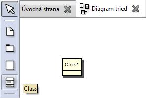
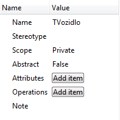

Pridanie prvkov
Ak máme otvorený diagram, môžeme si všimnúť, že v paneli nástrojov pribudli ikony.
Pri prechádzaní myšou ponad ikony sa zobrazujú popisky s názvom prvku/spojenia.
Klikneme na ikonu triedy ("Class") a následne klikneme do pracovnej oblasti.
Vidíme, že do diagramu aj do stromu projektu pribudla trieda "New Class".
Obdobne môžeme pridať ďalšiu triedu alebo iný prvok.
Odporúča sa, aby každý prvok mal jedinečné meno - to mu môžeme meniť v záložke "Vlastnosti".

